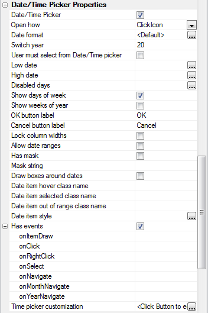
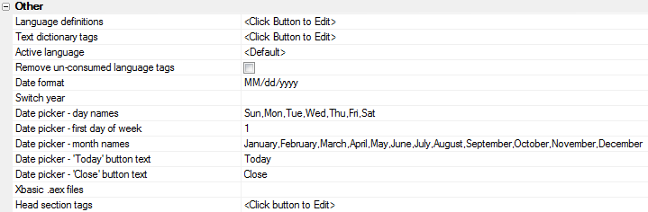
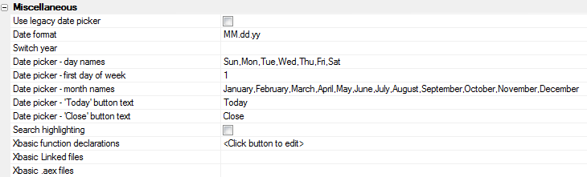
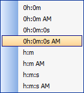
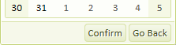
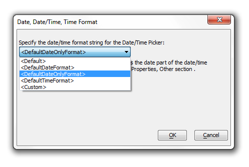
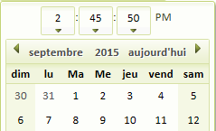

Date Picker for UX and Grid Components
In both the UX Builder
and the Grid Builder it is possible
to add a Date Picker to your application. The Date Picker includes,
among other things, the following features.
- It can be configured as a date, date/time, or time picker by setting the Date format string.
- Client-side Event mode allows the first and last date shown in the Date Picker to be dynamically computed using Javascript functions
- It can be configured to disable certain days of the week. For example, can disable dates on Saturdays and Sundays
To select the new Date Picker in the Grid
Builder, make sure that the 'Use Legacy Date Picker property' in the
Properties > Miscellaneous
section is unchecked. The UX Builder will always use the new
Date/Time Picker.
To turn a date picker into a date/time picker, simply define a
Date Format that includes a time portion.
|

Date/Time Picker properties grid in the UX Builder
Additional settings, including localization properties, are found in the
Properties > Other for the
UX builder. In the Grid
builder these same properties can be found under the
Properties page under Miscellaneous.

Date Picker settings in the Other Properties section of
the UX Builder

Date Picker settings in the Other Properties section of
the Grid Builder
To create a Date Picker in the
UX Builder, click on the
Controls button
under the design menu. Next go to the Data
Controls drop-down under the same menu and select the
[Textbox] control. The
New Control Dialog will appear.
Give your control a name and a label, like 'Length of Stay' or
'Date of Arrival' and select a data type for your control. You
can choose Character, Date, Time, or Short-time as a data type,
though if you choose Character this will limit you to the Time
Picker properties. Click OK,
the new control will be added to your list of controls. As noted
in the intro, in order to turn a Date Picker into a Date/Time
Picker it is necessary to change the Date
Format setting. While still on the
Control page, click on the control that you created. You
will notice that the Date Format
property is set to <Default>

This
<Default> property refers to whatever you set as the
Date Format under the
Properties Menu in the UX builder.
Put another way, <Default> is not a generic Alpha
Anywhere setting but rather whatever you would like the default
setting for your project to be. If you would like your
application to contain both a date and time picker you need to
make both of these format strings appear in the <Default>.
|
Set <Default> to include a Date and Time Picker
1. With a [Textbox] control with a Time type added to the UX Builder, go
to Properties.
2. Go to Other and select the
Date Format property row. Click the button
to the right
of the row.

3. The Date Format Dialog will load. Select
the Date Format you wish to use from the drop-down and click the
Build button next to the
Time Format: box.
4. The Time Format Codes Dialog will appear. Here you can either format
your own string using the Format String box and the Format Code list that
appears above it. Alternatively, if you want a format string that has
already been created simply click the text button labeled
Insert pre-defined format strings. This will determine how the Time
picker appears in your control. This example creates a Time Picker showing
the hours, minutes, and seconds with either an AM or PM displayed and a 0
when empty.

Pre-defined format strings
5. Click OK to close the
Time Format Codes dialog. You will see your new Time Format displayed in the
Date Format dialog.
6. Click OK to close the
Date Format dialog. Your change should be visible in the Date Format
definition on the Properties page.

7. In the Grid Builder go to the Working Preview tab. You
should see something like this when you click the Date/Time Picker drop-down
button.

Date and Time Picker
Note: If you have a Date Picker control with
both a date and time portion, you will see an OK and Cancel
button at the bottom of the Date Picker. Users can click on
these to confirm changes when there is more than one format
string. If there is only one format string these buttons will
disappear completely. You can set the label on the OK and Cancel
buttons by going to Controls in the UX Builder design menu,
scrolling down to the Date/Time Picker Properties list, and
changing the text under the 'OK button label' and/or 'Cancel
button label' properties.


OK Button label setting and
resulting control
|
Creating Multiple Controls with Different Portions.
1. If you want one of your controls to have a date and time format while
limiting the format of some other controls there is an easy way to do this.
First go to the Controls page under the UX
Builder Design menu.
2. Click on the control you wish to modify and on the right scroll down
to the Date/Time Picker Properties list.
3. On the Date Format property row click the
button at the
end of the row.
4. The Date, Date/Time, Time Format Dialog
will open. If you have not set the <Default> to include a Time and Date
Picker format string see the instructions above on how to do this. If your
<Default> setting does include both of these, then this dialog is where you
can override the <Default> setting. Click on the drop-down to select the
override setting you wish to use. <DefaultDateOnlyFormat>
will make the control only displays the date format string from your
<Default>. <DefaultTimeFormat> will alter a
control to only include the time format string from your <Default>.
<Custom> lets you create a control with its own
separate date and time format strings. Selecting <DefaultDateFormat> is the
same as seleting <Default>.

Override the <Default> Setting for Date/Time Format
5. If the 'Date of Arrival' control shown at the beginning of the guide
is overridden with the <DefaultDateOnlyFormat>
then it will look something like this...

There are a number of additional properties
that you can set in the date picker. Show weeks of the year
numbers the weeks in a year and displays them vertically next to
the calendar. In this example, checking 'Show
weeks of the year' displays August containing weeks 31
through 36 of the year 2015...


The 'Show
days of the week' Setting toggles on and off the days of
the week. Out of the box these settings are in English. However,
if you are in a non-English speaking country you can control the
month and day names. To access the language strings go to the UX
Builder Properties on the design
menu and scroll down to the Other
properties. Change the text for the "Date
picker - 'Today' button text", the "Date
picker - day names" text, and the "Date
picker - month names" text to your liking. To see the
changes simply click on Working Preview and open your Date
Picker control.

Setting international text
The Has
mask property on the Controls page under Date/Time Picker
properties allows you to restrict what a user can enter into a
Date Picker. In cases where the user is doing their own typing
into a field, a mask can prevent them from entering characters
and only allow them to enter numbers, or visa versa. Alpha
Anywhere also has an Allow date ranges
property. A date range is where you use a single date
field to enter two date values. The Multiple separator
property lets you decide which character(s) you want to use to
distinguish the two ranges. Before you change it the separator
is usually ..

A date range with .. as a
separator
The Low
date property sets the lowest date that a user can select
on the Date Picker. Similarly the High
date property sets the highest date that a user can
select. Both of these properties are listed on the Controls page
under Date/Time Picker properties. When you click the button
next to either of the two, the 'Property
Value' dialog will open. Here you can choose either an
Explicit value or a
Javascript function for the low and
or high date. If you want an explicit value, which a user can
not go beyond, simply enter it in the
Property value: text box. Alternatively you could also
copy and paste into this box from your working preview.

A low date set at August
11th
If you click the Javascript
function radio button in the Property value dialog, then you can
use a function for the Low date or High date property instead of
an absolute value. Using this feature you can prevent users from
entering an end date that occurs before the start date that
enter.
|
Adding a Javascript Function to a Low date Property
Selection to force the user to make a selection from the date picker and
not allow them to do their own entry.
Low set to function:getLowDate
can go to code Javascript functions and see getLowDate()
function getLowDate(){
var startDate = {dialog.object}.getValue('START_DATE');
if(startDate != '') return startDate;
else return '';
}
First thing it does is get a variable called startDate and it reads the
value that the user typed into the startDate field. And then if the
startDate field is not equal to Null than we return the startDate, so now
whatever value the user typed into the StartDate field has now been set as
the lowdate for the end date field. Otherwise the value is left blank. This
makes it easy to dynamically control the start date and end date of your
control.
The
Disabled days property in Date/Time Picker Properties
under UX Controls prevents users from entering data for certain
days of the week. The disable a day first click the button
next to the Disabled days property to load the
Property Value Dialog. Enter the
code for the day you want to disable into the
Property value: textbox. Days are
coded based on numbers... 0 (Sunday), 1 (Monday), 2 (Tuesday),
3(Wednesday), 4(Thursday), 5(Friday), and 6(Saturday). So,
entering 0,6 as a property value will stop people from entering
data on a weekend.

Disabled Days
One last property that you might
have noticed listed under the Date/Time Picker Properties are
Has events. Has events allow you to
define your own Javascript for events like on Click, onNavigate,
and onSelect. 'Has events' also contains onItemDraw
which is a very powerful javascript event handler that lets you
to customize the html layout of your date picker.
|
These videos give a tour of the Date Picker features and show how the Date picker appears with various settings:
Watch Video - Part 1")
Watch Video - Part 2
Watch Video - Part 3